Altri progetti e passioni
Questa pagina è dedicata alle mie esperienze e iniziative extra-accademiche.
AGESCI

Sono un socio attivo dell'AGESCI (Associazione Guide e Scout Cattolici Italiani) dal 2007, anno in cui sono entrato come lupetto a dieci anni. Il mio percorso è iniziato nel gruppo Cagliari 5, situato nel quartiere in cui sono nato e cresciuto, e al quale appartengo ancora oggi.
Nel 2018 sono diventato un capo scout. Dopo aver completato il percorso di formazione capi articolato in tre fasi, nel 2025 ho conseguito il Wood Badge (brevetto di capo), simbolo riconosciuto a livello mondiale per il completamento della formazione capi nel movimento scout. La mia formazione è in costante aggiornamento e sono impegnato a migliorarmi come educatore per le giovani generazioni.
Il mio impegno in AGESCI è cresciuto fino a includere responsabilità di coordinamento e comunicazione a livello locale e regionale. Da ottobre 2025 ricopro il ruolo di capo gruppo del Cagliari 5, oltre a quello di incaricato regionale alla comunicazione per l'AGESCI Sardegna. Guardando al futuro, sarò parte dell'evento mondiale 26° World Scout Jamboree a Danzica, in Polonia, nel 2027.
Passioni e progetti personali
Oltre all'economia, sono appassionato di escursionismo, attività all'aria aperta e storia locale della mia regione. Seguo con molto interesse anche progetti all'intersezione tra tecnologia e geografia, in particolare i Sistemi Informativi Geografici (GIS) e la mappatura open data.
Credo che la comprensione dello spazio e del territorio attraverso i dati spaziali sia fondamentale per preservare il patrimonio locale e promuovere un turismo sostenibile. Nel mio tempo libero, mi diletto nella scrittura di script e semplici strumenti per automatizzare il web data scraping e costruire visualizzazioni cartografiche.